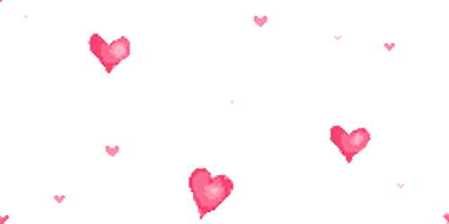

To My Beloved Friend!

To me, fair friend, you never can be old,
For as you were, when first your eye I ey'd,
Such seems your beauty still. Three winters cold
Have from the forests shook three summers' pride,
Three beauteous springs to yellow autumn turn'd
In process of the seasons have I seen,
Three April perfumes in three hot Junes burn'd,
Since first I saw you fresh, which yet are green.
Ah! yet doth beauty, like a dial-hand,
Steal from his figure and no pace perceiv'd;
So your sweet hue, which methinks still doth stand,
Hath motion and mine eye may be deceiv'd:
For fear of which, hear this, thou age unbred;
Ere you were born, was beauty's summer dead
Happy Birthday To You!